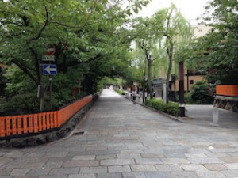
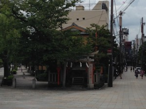
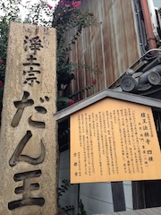
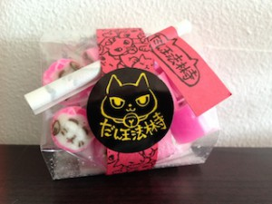

Different from the south part, the north part of the Gion area is rather quiet. Many “Ocha-ya” (tea-house) stand quietly. Maybe it’s because most tourists who visit Kyoto for the first time are too pressed for time to come down to this area. There are not many sites to see compared to the other side of Gion, like Kiyomizu-dera temple or Kenninji-temple. But if you have time or if it’s your second visit, I recommend you taking a walk in the street called Shinbashi-dori Street (新橋通).
*The north part I’m mentioning here is between Shijo-ohashi (四条大橋/Shijo Bridge) and Sanjo-ohashi (三条大橋/Sanjo Bridge).
Shinbashi-dori Street:


This old townscape is preserved by the local government.


The street crosses the river called the Shirakawa River (白川). Shira means white, and kawa means river. That is, White River.
This river is made out of white sand composed mainly of granite. And there is a small bridge, called Tatsumi-bashi (巽橋）, hanging over the river.

In the middle of the street you will find a small shrine. This is for someone who loves a small story, like me.
Tatsumi-daimyoujin God (辰巳大明神)
Tatsumi means the southeast. It came to be called Tatsumi-daimyojin because it was located in the southeast of Kyoto Imperial Palace (京都御所). It was constructed to protect the southeast part of the palace. But what’s interesting is the god enshrined here is a racoon dog. Once upon a time, a racoon dog living by Tatsumi-bashi Bridge was tricking passersby into walking in the Shirakawa River. When some Gion people made a small “hokora” (a small shrine) to enshrine this racoon dog, it stopped making a fool of people.
What a mischievous, but very lucky, racoon dog! Visit the shrine, the god will protect you during the trip.
Sanjo-dori Street:
If you are a good walker, continue to Sanjo-dori Street. Here is another interesting temple waiting.
Dan-no horin-ji temple (檀王法林寺）
In the main hall, the god called “Shuyajin”(主夜神) is enshrined. Shuyajin God is said to rid us of all our fears and difficulties, and lead us to the path to spiritual enlightenment. Also, Shuya(主夜) can be written Shuya(守夜). The first Kanji character, 守, is to guard, and the second is night. This god is also worshiped as a god protecting us from fires and burglaries at night.


The god protecting us at night was probably associated with a black cat, which has the eyes glaring in the darkness. A black cat has, thus, been believed to be a messenger of Shuyajin God.


The black maneki-neko or beckoning cat brings good luck. The candy with a fortunetelling slip is also recommended.
*Respect the temple and the residents living in the area when you visit there.
More information: Dan-no horin-ji (Japanese only)
Matsuhiro
On Sanjo-dori Street, you shouldn’t miss this shop! There are a countless number of fancy purses called “gamaguchi” in Japanese.
They are all made out of colourful kimono cloth, and various designs will please your eyes. Find one special for you!
More Information: Matsuhiro

I bought several purses here for my family! The one in the photo is for myself!!! I’m sure you can find good souvenirs.
The shop clerks are very friendly and kind too.
Enjoy traveling and shopping.